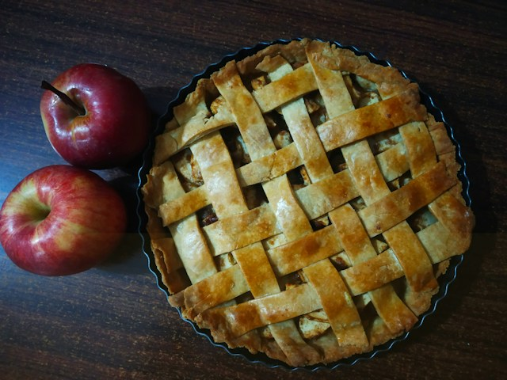

Apple Pie

Description
This apple pie will take you right back to the one that granny used to make. It is so incredibly delicious and easy to make.
Please the whole family with this one.
Ingredients
- 8 small Granny Smith apples
- 1/2 cup unsaltedButter
- 3 tablespoons flour
- 1/2 cup brown Sugar
- 1 nine inch pie crust
- 1/4 cup water
Steps
- Gather the ingredients. Preheat the oven to 425 degrees F (220 degrees C). Peel and core apples, then thinly slice. Set aside.
- Melt butter in a saucepan over medium heat. Add flour and stir to form a paste; cook until fragrant, about 1 to 2 minutes. Add both sugars and water; bring to a boil. Reduce the heat to low and simmer for 3 to 5 minutes. Remove from the heat.
- Press one pastry into the bottom and up the sides of a 9-inch pie pan. Roll out remaining pastry so it will overhang the pie by about 1/2 inch. Cut pastry into eight 1-inch strips.
- Place sliced apples into the bottom crust, forming a slight mound. Lay four pastry strips vertically and evenly spaced over apples, using longer strips in the center and shorter strips at the edges.
- Make a lattice crust: Fold back the first and third strips. Lay one of the remaining strips horizontally across the pie, then unfold the first and third strips over it.
- Fold back the second and fourth vertical strips. Lay another strip horizontally across the pie, then unfold the second and fourth strips over it. Continue alternating and weaving in the remaining strips to form a lattice. Trim excess pastry as needed, then pinch the edges to seal.
- Slowly pour the sugar-butter mixture over the lattice, allowing it to seep through to the apples. Brush some over the pastry, taking care not to let the mixture run over the sides.
- Bake in the preheated oven for 15 minutes. Reduce the oven temperature to 350 degrees F (175 degrees C) and continue baking until the crust is golden brown, the filling is bubbling through the lattice, and the apples are tender, 35 to 45 minutes. Loosely cover the crust edges with foil if they begin to brown too quickly. Transfer the pie to a wire rack and let cool before slicing.
- Serve and enjoy!
Home